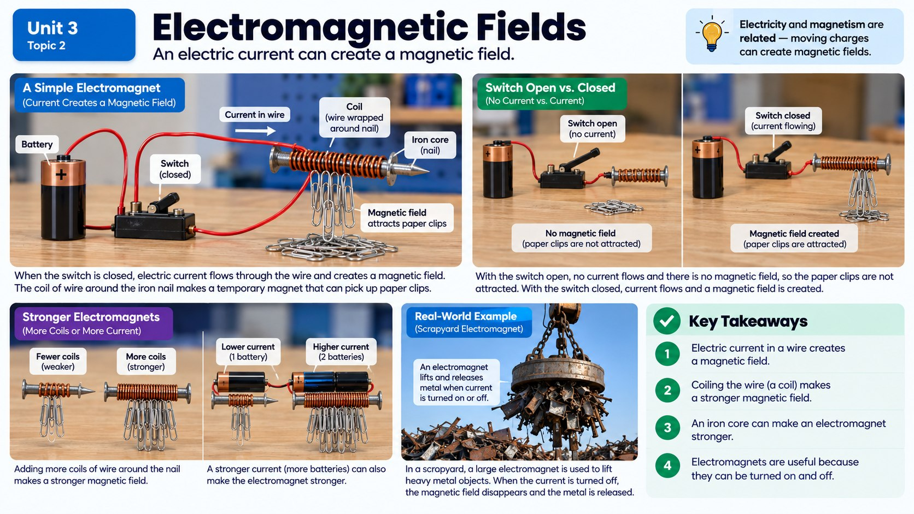

How can a giant crane at a junkyard lift an entire car with a magnet one second, then drop it exactly where it wants a moment later? The secret is that electricity can create magnetism you can switch on and off.

From Electric Current to Magnetism
For a long time, people thought electricity and magnetism were two completely separate things. Then scientists discovered something surprising: whenever electric current flows through a wire, it creates a magnetic field around that wire. Run current through a straight piece of wire and a compass placed nearby will actually twitch and swing to point along the new field, even though there's no permanent magnet anywhere in sight.
This discovery meant that magnetism isn't only something certain materials have naturally, like a chunk of iron. Magnetism can also be created on demand, just by pushing electric charge through a conductor. That single idea is the foundation of an electromagnet: a magnet that only exists because current is flowing through wire.
Unlike a bar magnet you buy at the store, an electromagnet has an on/off switch built right into how it works. No current, no magnetic field. Flip the current on, and a magnetic field appears out of nowhere.
Coils, Cores, and Current: Building a Stronger Electromagnet
A single straight wire carrying current makes a fairly weak magnetic field. But wind that same wire into a coil, called a solenoid, and something powerful happens: the magnetic field from each loop of wire adds together with the fields from all the other loops, creating one much stronger combined field down the center of the coil.
That means the number of turns of wire is one of the biggest factors controlling an electromagnet's strength. Ten loops make a noticeably stronger magnet than two loops, using the exact same wire and the exact same current. Add an iron core through the center of the coil, and the field gets even stronger, because the iron itself becomes magnetized and boosts the effect.
The other major factor is current strength. Crank up the amount of electric current flowing through the coil, and the magnetic field gets stronger right along with it. Turn the current down, and the field weakens. This is exactly why the same electromagnet can be built to lift a soda can one day and a full-size car the next: engineers just adjust the coil's turns and the current running through it.
Electromagnets on the Job
This adjustable, switchable magnetism is incredibly useful. At a junkyard, an enormous electromagnetic crane lowers over a pile of scrap metal, and the operator flips a switch that sends current surging through a massive coil. The resulting magnetic field is strong enough to lift an entire car body straight into the air. When the crane swings the car to the right spot, the operator cuts the current, the magnetic field disappears instantly, and the car drops exactly where it's needed. A permanent magnet could never do that job, because it can't be switched off.
Electromagnets also make doorbells buzz, by pulling a small metal striker against a bell whenever you press the button and complete the circuit. They spin the shafts inside electric motors, using changing magnetic fields to create constant rotation that powers everything from blenders to electric cars. And they run in reverse inside generators, where spinning magnets near coils of wire actually produce electric current, which is how power plants generate the electricity that reaches your house.
In every one of these machines, the same basic rule applies: change the current, change the number of coils, or change the core material, and you change how strong (or weak) the magnetic force becomes.
Three Invisible Fields, One Big Idea
Magnetic fields aren't the only kind of invisible force field in nature. Gravitational fields surround every object with mass and pull other masses toward them, which is why you stay stuck to the ground and why the moon orbits Earth. Electric fields surround every electrically charged object and can push or pull on other charges nearby, static cling and lightning included. And magnetic fields surround magnets and current-carrying wires, pushing or pulling on other magnetic objects.
All three fields share the same big idea: they let objects exert forces on each other without ever touching, and all three get weaker as distance increases. Electric force works a lot like magnetic force in that way. Two charged objects close together pull or push much harder than the same two objects far apart, and the size and type of charge matters too. A strongly charged balloon rubbed on hair will grab tiny bits of paper from close range, but move it a few feet away and the effect vanishes.
Just like with magnets, moving charged objects closer together changes the potential energy stored in the system, and nearby magnetic fields can even influence how charged particles move. That overlap between electricity and magnetism is exactly why scientists eventually realized they aren't really separate forces at all. They're deeply connected, which is exactly what makes electromagnets possible in the first place.
Running the Idea in Reverse: Electromagnetic Induction
So far, you've seen electricity create magnetism: send current through a wire, and a magnetic field appears. Scientists soon discovered the reverse also works. Move a magnet near a loop of wire, or move the wire near the magnet, and the changing magnetic field pushes electrons through the wire, creating an electric current out of nothing but motion. This reverse process is called electromagnetic induction, and it turns out to be one of the most useful discoveries in the history of physics.
Almost every power plant on Earth, whether it burns coal, splits atoms, or captures the force of falling water, relies on induction at its core. Something spins a turbine, the turbine spins a shaft lined with magnets, and those spinning magnets sweep past huge coils of wire. The changing magnetic field induces a current in the coils, and that current travels out through power lines until it reaches the outlets in your house. Even a hand-crank flashlight uses the same trick on a tiny scale, turning the mechanical energy of your spinning hand directly into electric current, no batteries required.
It helps to think of an electromagnet and induction as mirror images of each other. An electromagnet takes electric current and produces a magnetic field. Induction takes a changing magnetic field and produces electric current. A generator and an electric motor can even look nearly identical inside, with the same coils and magnets arranged the same way. The only real difference is which direction the energy flows: current in, motion out for a motor; motion in, current out for a generator.
Real-World Connections
MRI Machines
Hospitals use MRI (Magnetic Resonance Imaging) machines that contain some of the most powerful electromagnets on Earth to create detailed images inside a patient's body without any surgery.
Electric Motors in Everyday Devices
Everything from an electric toothbrush to an electric car uses an electromagnet whose field can be precisely controlled by adjusting the current — exactly what makes electric motors spin.
Meet the Scientist
Biomedical Engineers
Biomedical engineers design and maintain the electromagnets inside MRI machines, balancing incredibly strong magnetic fields with patient safety. The electromagnets in a hospital MRI are thousands of times stronger than a refrigerator magnet, so engineers must plan for everything from medical implants to loose metal objects in the room.
Key Vocabulary
Bold, underlined words in the reading above are clickable too — tap one to see its definition pop out. Or click or tap a card below to reveal the definition.
Explore More
Current & Magnetic Fields | Magnetism | Physics | FuseSchool
Chapter Review
1. What happens to the magnetic field around a wire when there is no electric current flowing through it?
2. An engineer wants to make an electromagnet stronger without changing the power source. Which two changes would help?
3. Why is an electromagnet, rather than a permanent magnet, used in a junkyard crane that lifts and drops cars?
4. Which three types of fields let objects exert forces on each other without touching?
5. Two charged balloons are brought closer together. Based on how electric forces work, what should happen to the force between them?
California Science Test (CAST) Practice
A group of students builds a simple electromagnet by wrapping insulated wire around an iron nail and connecting it to a battery. They keep the same battery and the same nail, but wind different numbers of coils around the nail for each trial. Each time, they test how many paperclips the electromagnet can pick up.
| Number of Wire Coils | Paperclips Picked Up |
|---|---|
| 10 | 3 |
| 20 | 6 |
| 30 | 9 |
| 40 | 12 |
The students want to design an electromagnet that can pick up about 18 paperclips using the same nail and the same battery. Based on the data, roughly how many coils of wire should they use?